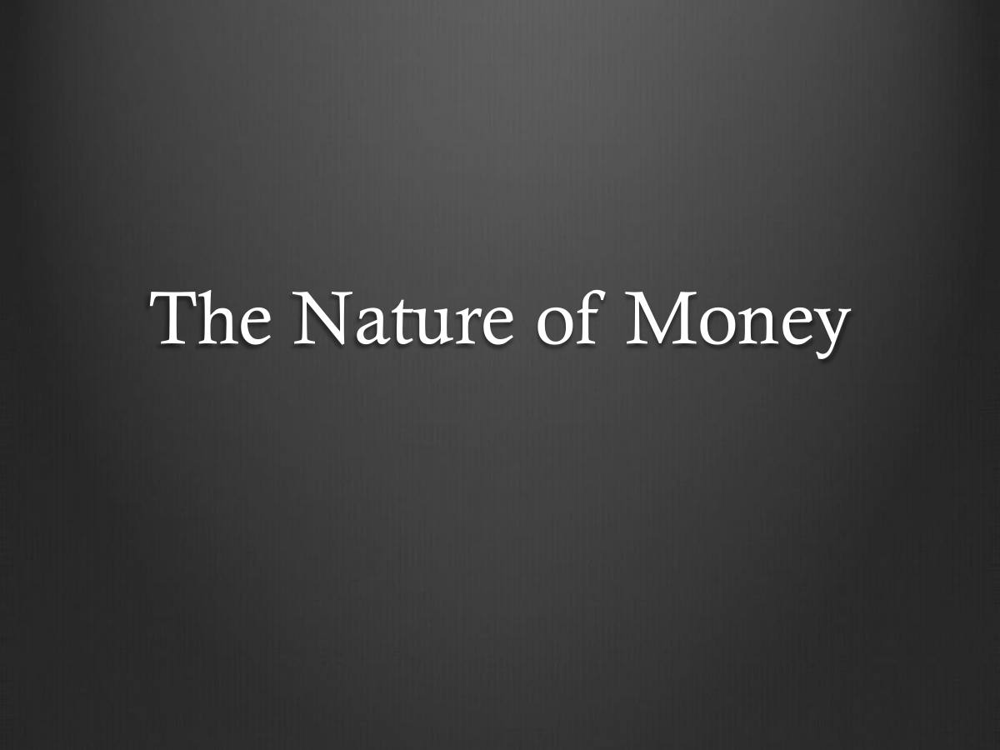
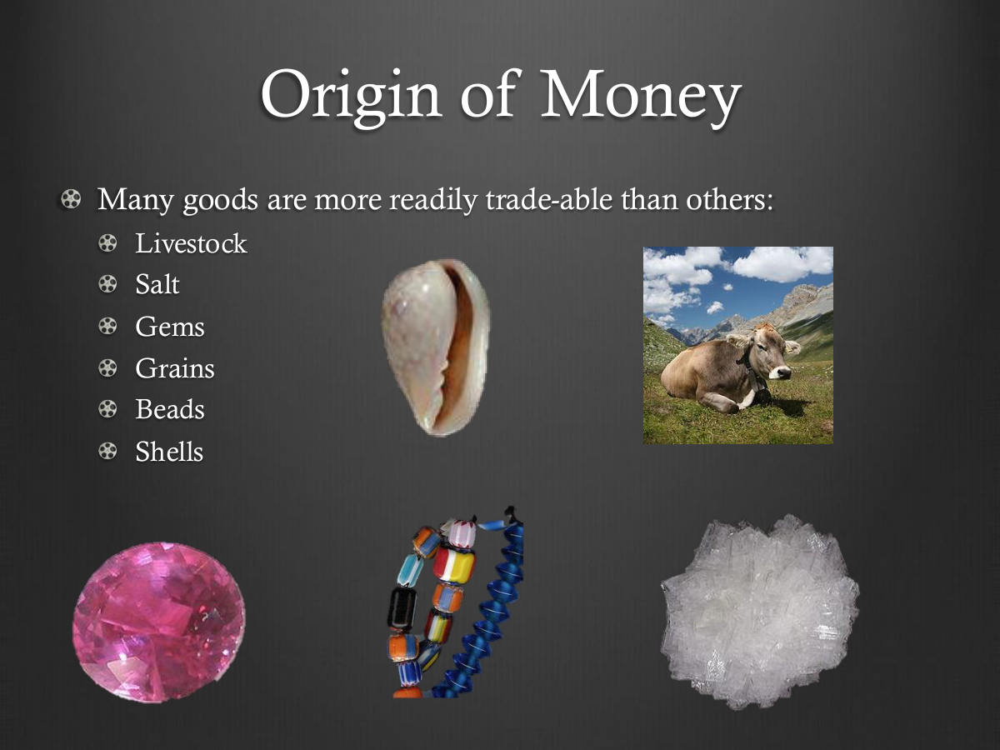
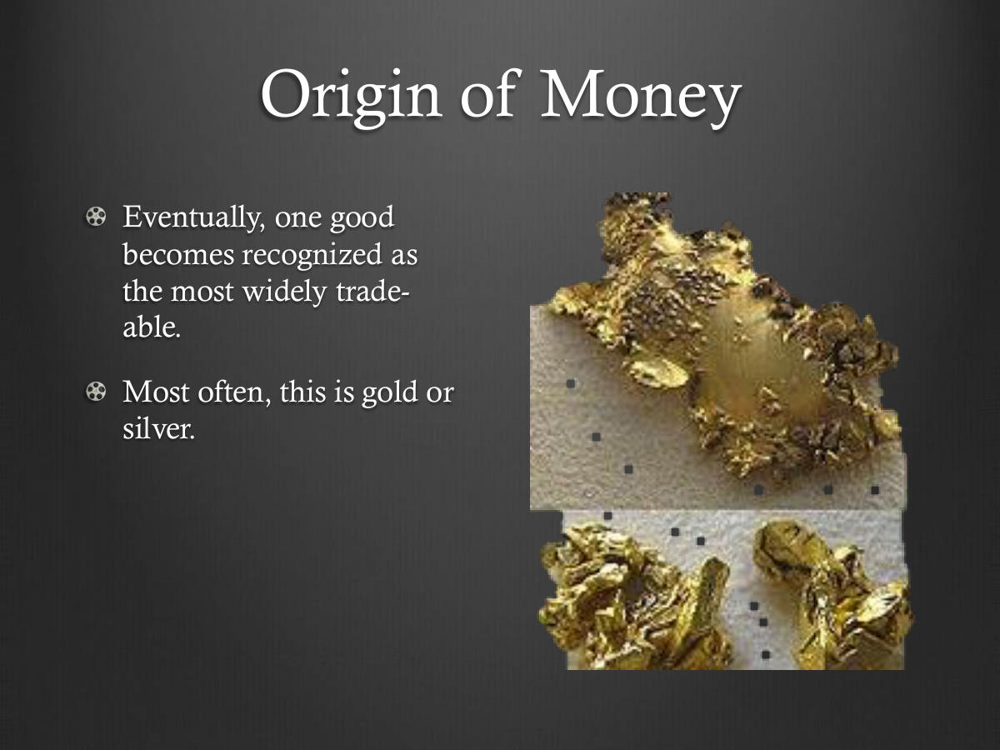
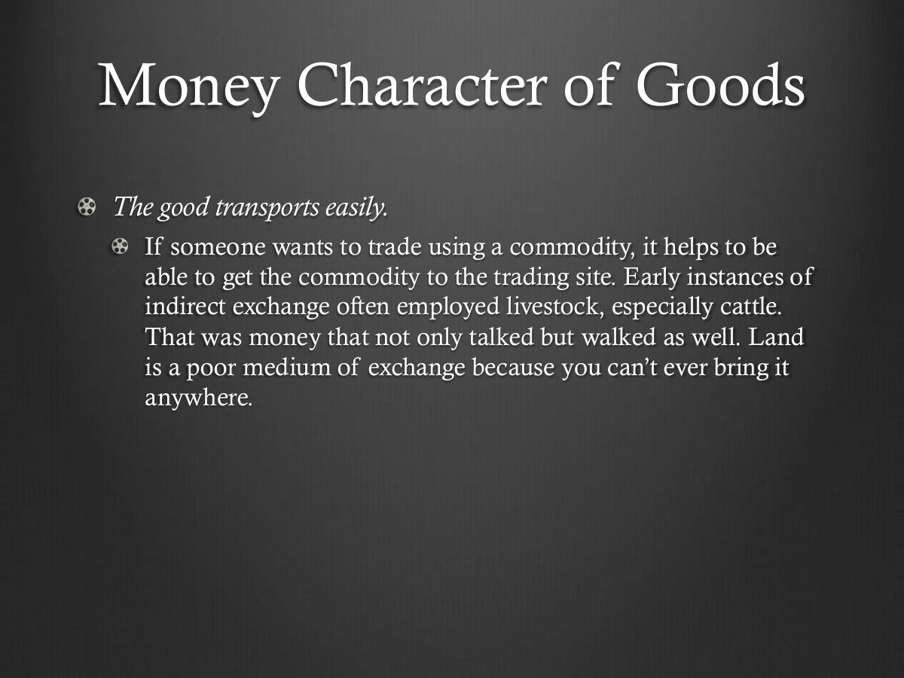
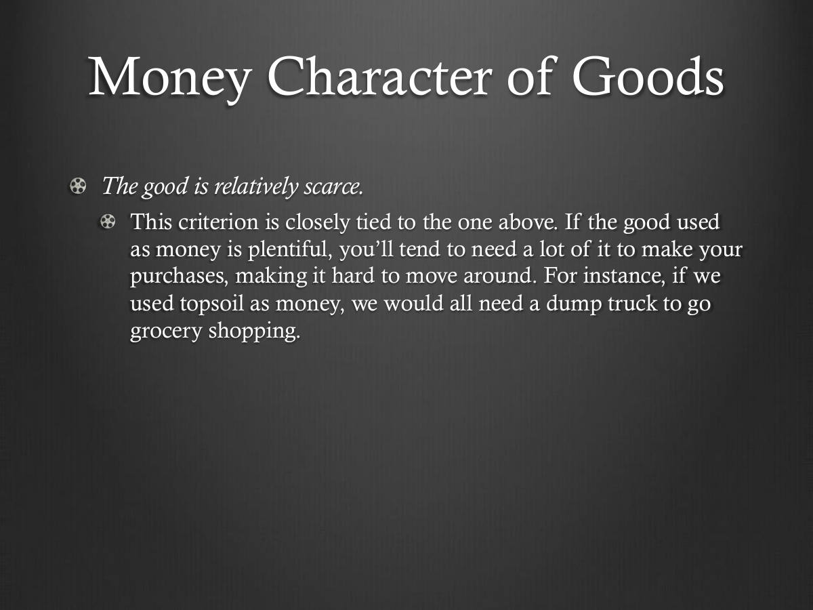
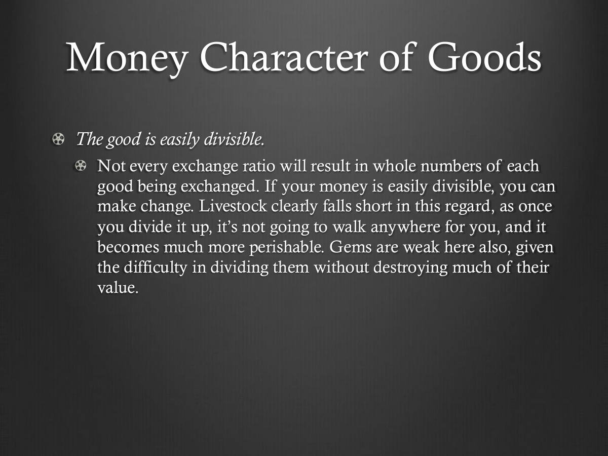

← The Great Transformation
Download PDF · 9 slides






![Money Character of Goods. The good is relatively imperishable. You don’t want your money “going bad” a couple of hours or days after you get it. The longer you can hold your money, the more opportunity you have to wait for a good deal to come around. This is why items like milk, eggs, meat, and so on are not suitable as money. Live- stock can, of course, die, but you can check when you’re trading to ensure that you’re not being given money that’s on its last legs. The precious metals and gems clearly stand out in this regard.](Money/slide-06.jpg)
![Money Character of Goods. The good is easy to store. Not only should your money last, you don’t want to have to go through a lot of rigmarole to get it to last. A chemical compound that is only stable below-300 degrees Fahrenheit will not come to be used as money. CarlMenger mentions that cattle were a popular medium of exchange among people in societies that were primarily agricultural and had plenty of open land nearby. The rise of cities made cattle much less useful as money. Most co-ops have strict rules against keeping livestock in an apartment, and the practice makes it very hard to keep the shag carpet clean. The precious metals and gems are again winners here.](Money/slide-07.jpg)
![Money Character of Goods. Each unit of the good is very similar to every other unit. You don’t want to keep fussing around checking out the quality of your money and adjusting the exchange ratio based on this quality. For one thing, someone else might judge this quality differently than you do. Diamonds, while in many ways suitable as money, are problematic in this regard—it takes an expert to judge the value of any particular diamond. The divisibility problem with diamonds is related to this. You can’t get the price of a whole diamond by adding up the prices of its pieces once it is cut.](Money/slide-09.jpg)